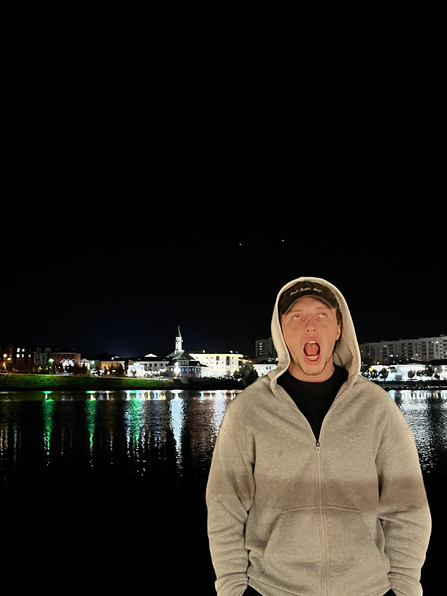
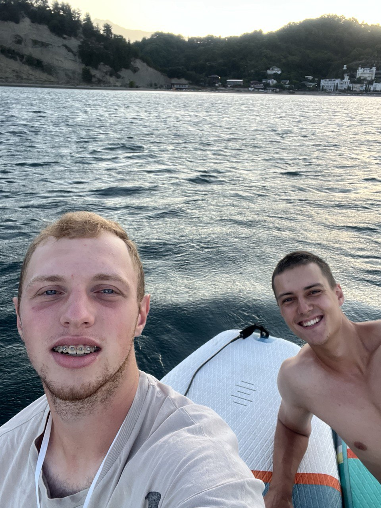
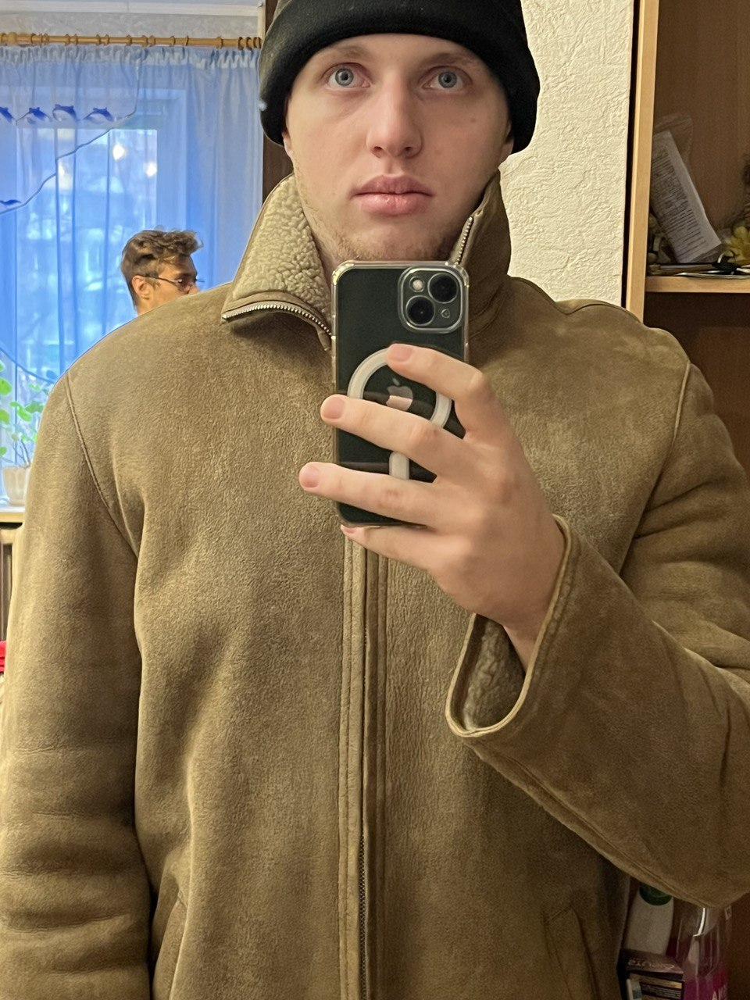
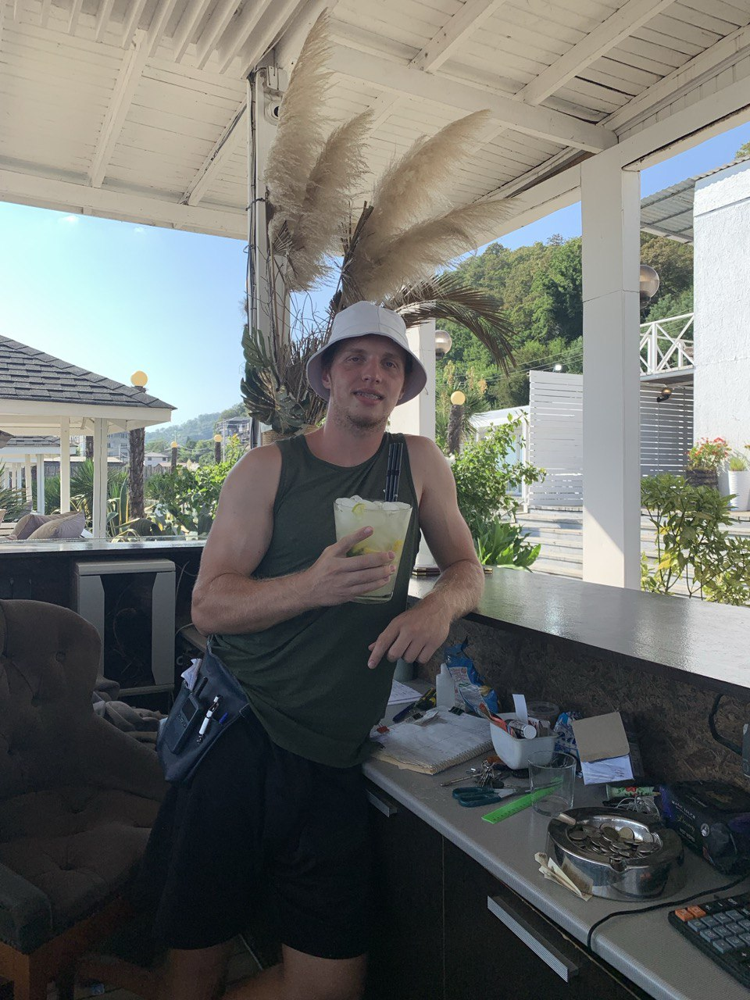

Скилы
- Статичная вертска HTML+CSS "высокий уровень"
- Адаптивная верстка HTML+CSS+SASS "высокий уровень"
- Бэкенд разработка JavaScript "средний уровень"
- Разработка сайтов и приложений REACT "низкий уровень"
- Натяжка на CMS: Worpdpress/ModX "низкий уровень"


Мотивация
Мотивация не нужна если мечты сильнее желаний.Цели
Творческое начало не совсем про меня, но идея создать что-то свое всегда была. Поэтому одной из глобальных целей на жизнь является запуск личного проекта в виде IT-компании или агентства. Я стремлюсь создать не только бизнес, но и организацию, которая будет приносить ценность и решать реальные задачи клиентов, сочетая технический подход с эффективными бизнес-стратегиями.Один из главных путей к достижению этих целей — создание системы, соблюдая которую я буду стабильно двигаться вперед из года в год. Это включает в себя регулярное развитие профессиональных навыков, установление четких этапов для достижения целей, планирование времени и ресурсов. Такая система помогает не только поддерживать фокус, но и минимизировать риски, связанные с неопределенностью. Важно иметь четкие ориентиры и адаптироваться к изменениям, что позволит мне идти по пути к собственному бизнесу и становлению профессионалом.
